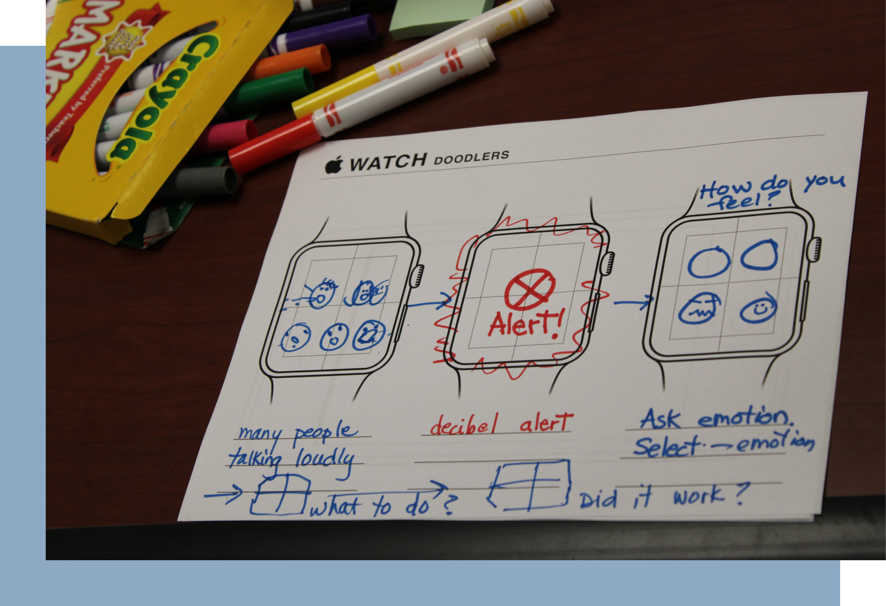
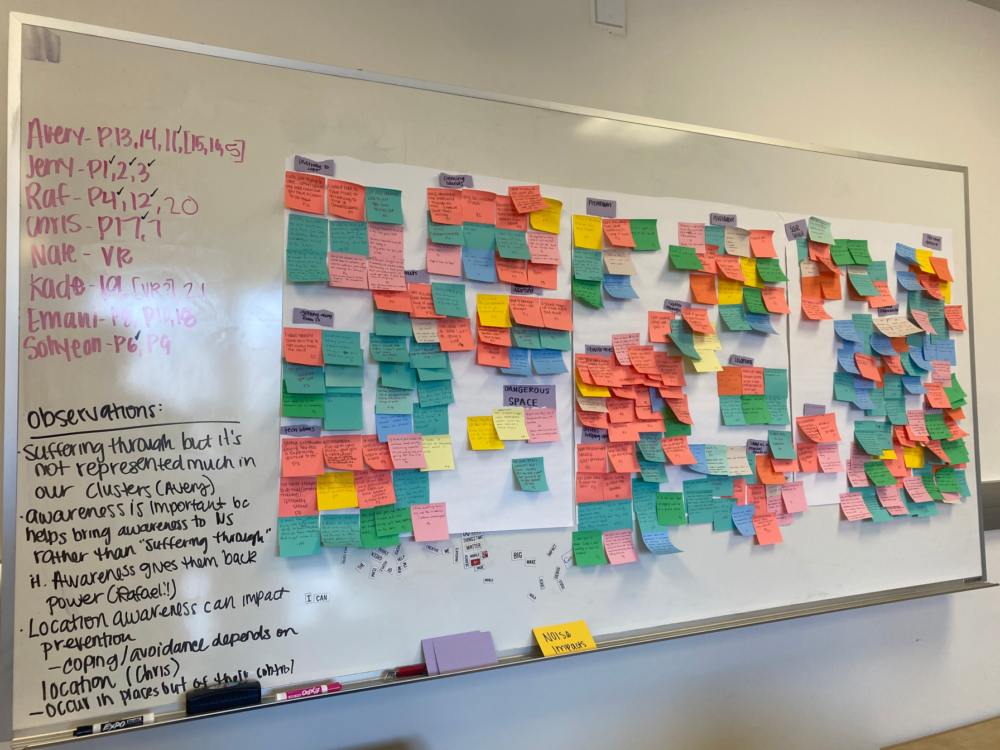
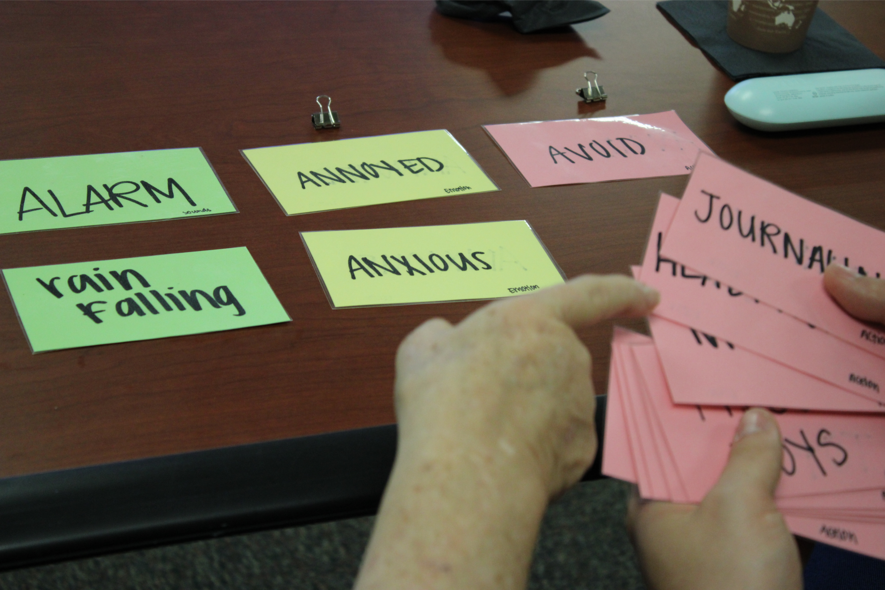
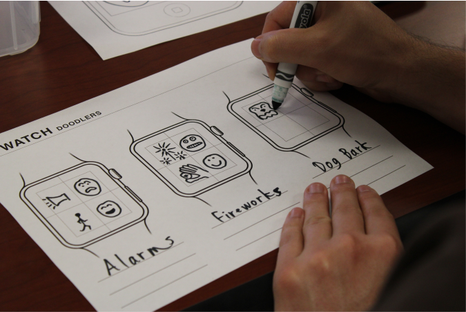
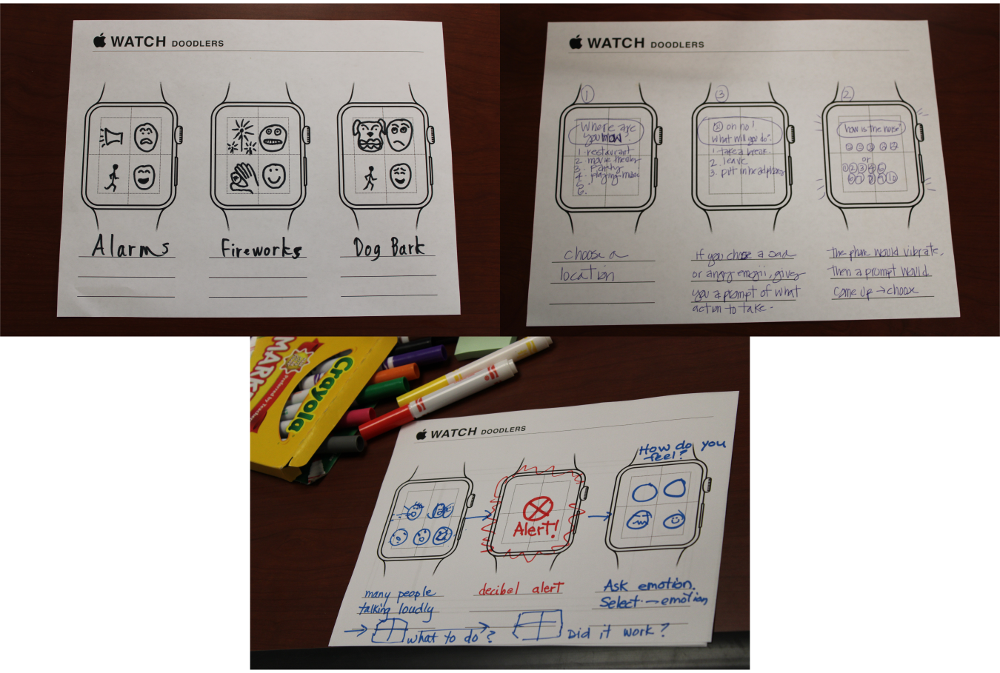
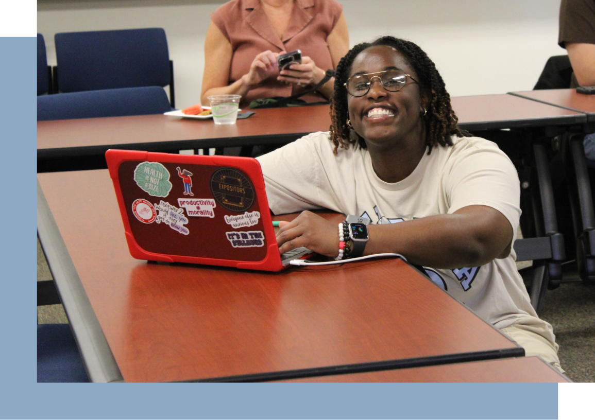

Research Assistant
Social & Technological Action Research Lab
December 2022 - March 2023
Overview :With a team of 6, conducted research to design an application that supports emotion regulation in overwhelming situations for autistics individuals with noise sensitivty.
Design Question
How might we provide methods to support emotion regulation in overwhelming situations for autistic individuals?
Solution
Our solution was to facilitate 6 co-design sessions within a two-month timeframe, engaging a cohort of 10 autisitc participants.
How it Works

Affinity Diagram
Based on 21 interviews conducted, we created an Affinity Diagram to find themes and patterns among autistic individuals with noise sensitivity.

Card Sorting
We asked our participants to categorize cards with different words related to feelings and sounds to discover patterns and trends.

Participatory Design
We facilitated 6 co-design sessions within a two-month timeframe, engaging a cohort of 10 participants to design their own watch complication.
Final Product

App Designs
In our last co-design sessions, we had participants create app and watch complication sketches.
Why it Matters
